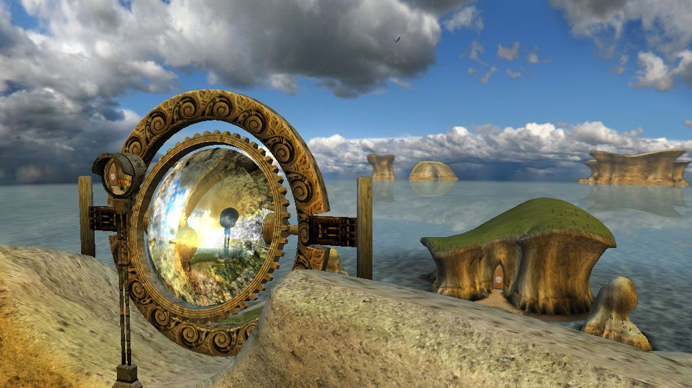
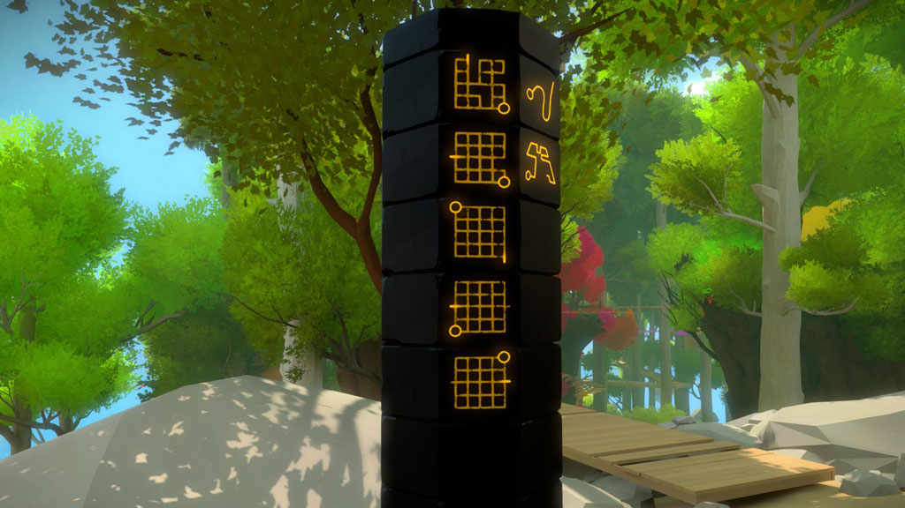
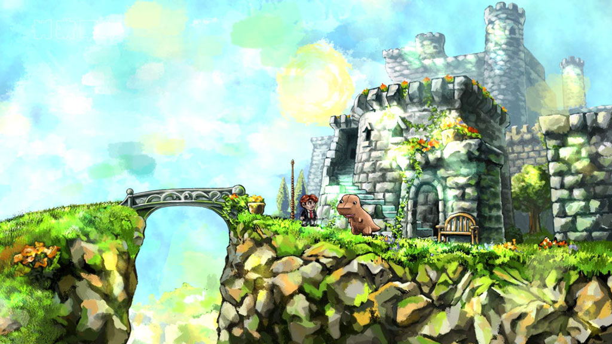
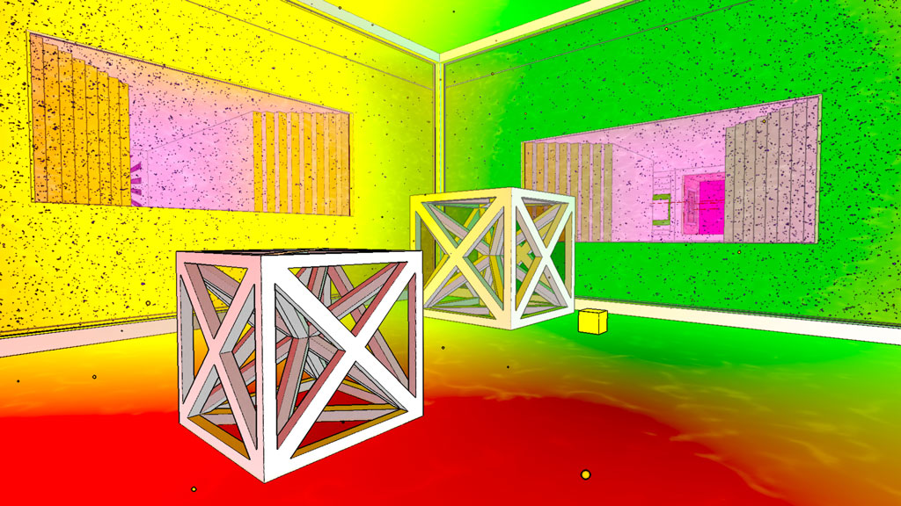
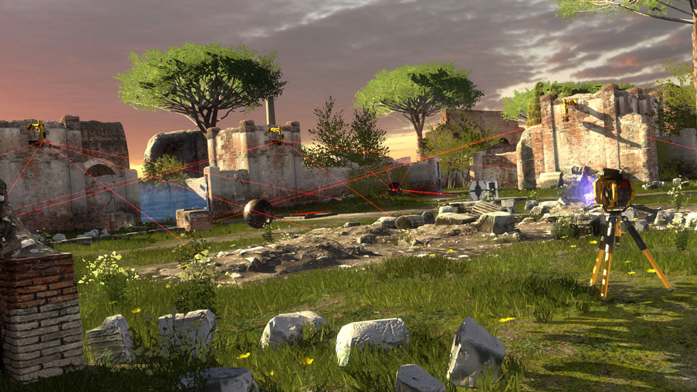
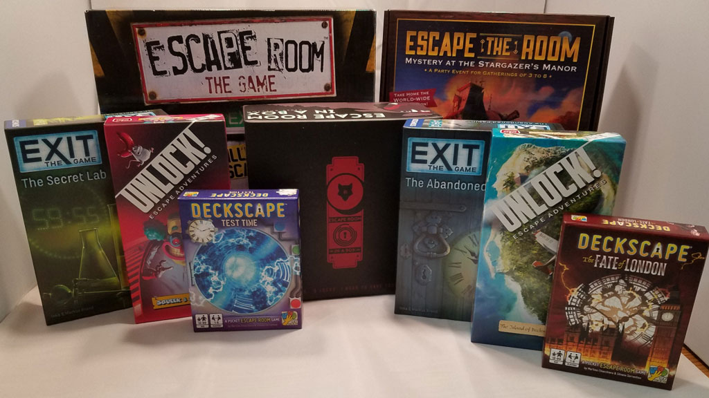
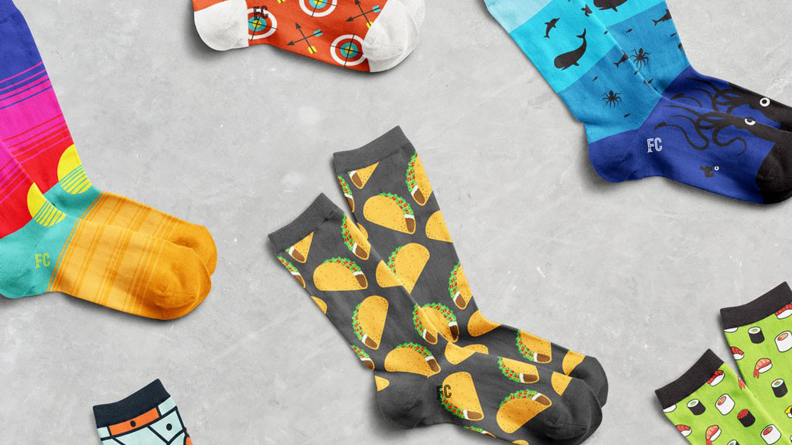
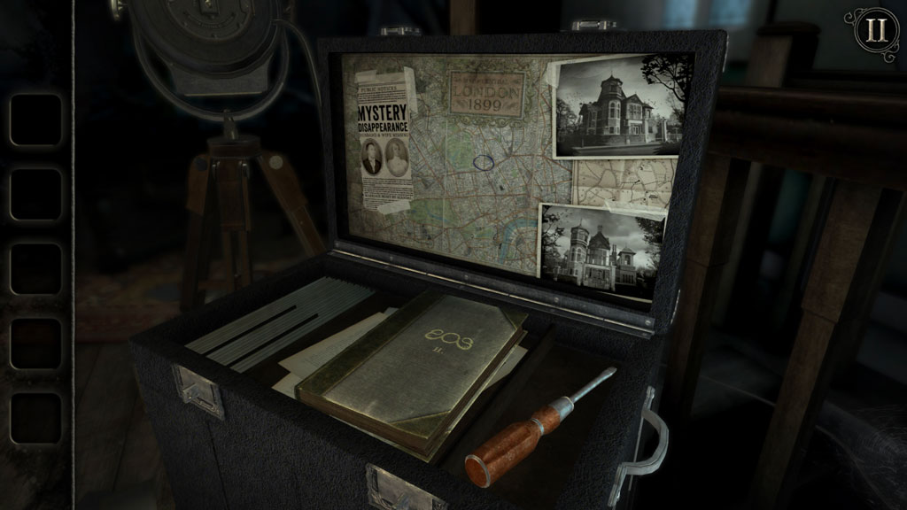
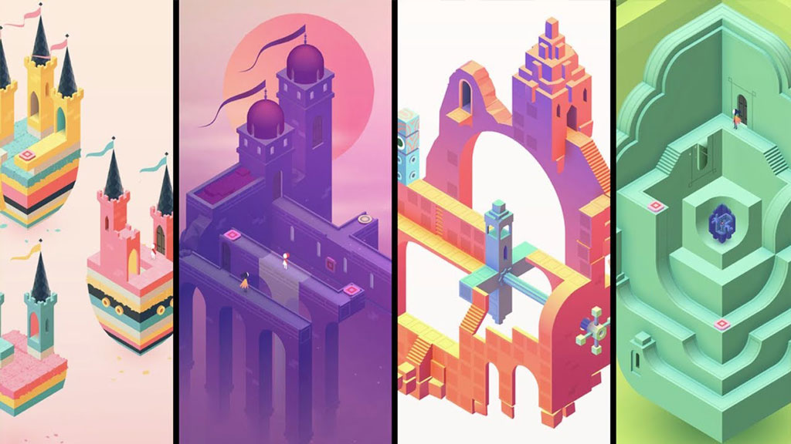

You Solved It!
I tried to find you something yakisugi for Christmas, but sending you a piece of burnt wood would just be ... weird. So herringbone? That was too tricky too. Hence the wooden cups that lead you here (BTW: Feel free to return those)! I've sent Joey some monies (you might have to tell him what it is for), and I'm hoping that you might like one of the following ideas I had, but ultimately, I hope you can just get yourself something that will make you happy.
Myst

This is an old game, and the gameplay is kind of like that "The Room" game you showed me on your phone - but the puzzles are less logic-based, and more explore-y. There are also several in the series, and I don't know if they build on each other, but probably if this sounds interesting at all, you could just start with the most recent one.
The Witness

This is one that came up when searching for games like Portal. I haven't played it, but it looks like it is a first-person type game where you run around and solve puzzles to advance through the land, I think.
Braid

This game was another recommended for people who liked Portal, but this one apparently lets you manipulate time???
Antichamber

Things change as you look away from them. It is set as a first-person, but after you walk down a hall, and turn around to look behind you, everything may have changed since you walked through there. Sounds super interesting, but also possibly frustrating.
The Talos Principle

Yet another recommendation from a Portal search (guess you can tell what one of my favorite games is). It is first-person, and apparently you have you an energy weapon which you use to activate or deactivate various elements in the map.
Escape Room

There are a number of board games that claim to be escape room board games - and while that sounds interesting, I can't imagine you can play it more than a couple of times before you know how to esacpe, and the game is probably much less fun. Maybe it would be good though?
Foot Cardigan

I like this idea a lot, and the name "Foot Cardigan" make me laugh. I can't remember if you like fun socks, but you could subscribe to get a few pairs of fun socks if you'd like.
The Room Series

Presumably, since you are the one that introduced me to this series, you already have purchased any of the ones you are interested in playing, but just in case...
Monument Valley 2

I really enjoyed the first version of this game. There are a bunch of 3D puzzles and impossible mechanical adjustments to solve.